Al-Kiswa al-Khassa
الكسوة الخاصة بدار الحِرَف
Le système vestimentaire propre à Dar al-Hiraf — et ce que porte, concrètement, un résident au fil de sa journée.
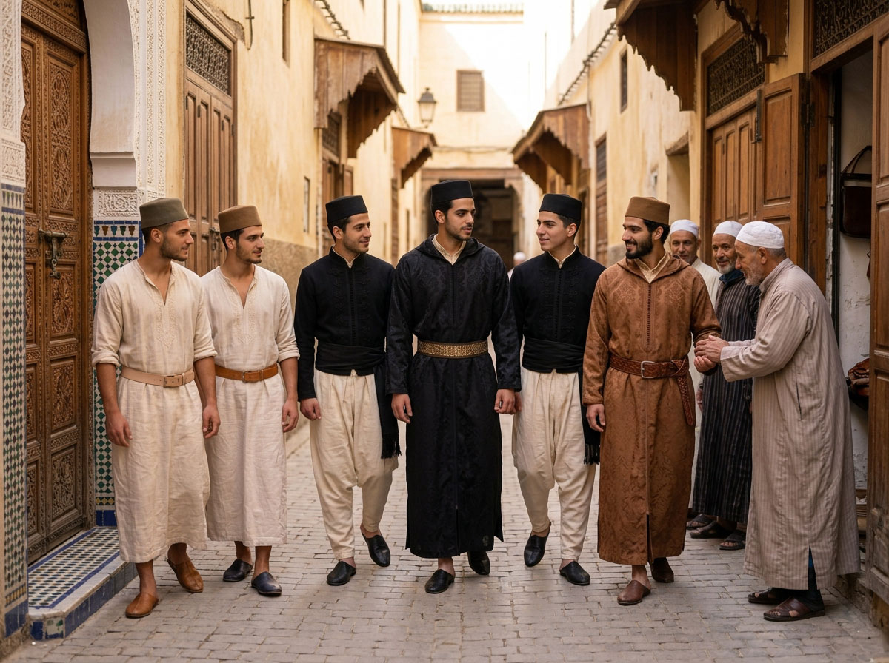
Contrairement au catalogue des formes traditionnelles marocaines et arabes présenté dans Vêtement, cette page décrit le système propre au Riad : pourquoi il se porte ainsi au quotidien, et de quoi il se compose précisément.
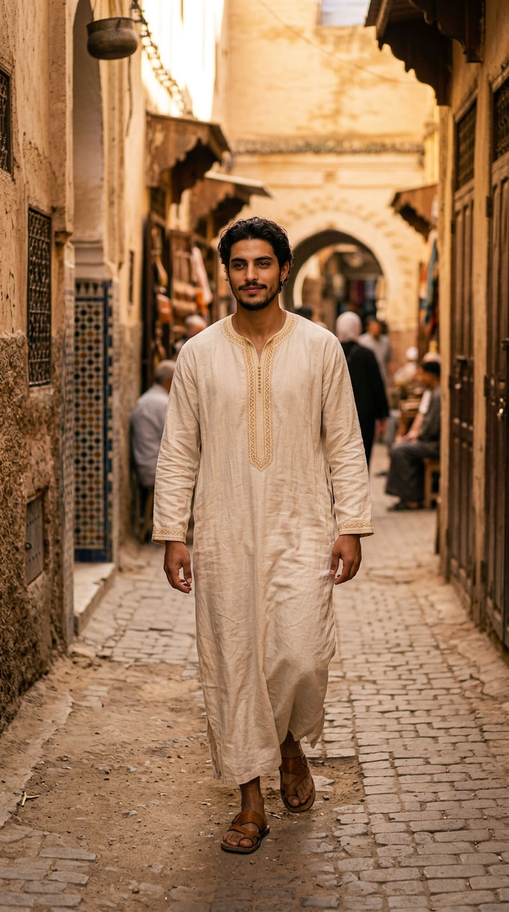
QUOTIDIEN
Une manière de porter, pas un uniforme
Dans la vie quotidienne du Riad — repas, prière, causeries, travail aux ateliers — le vêtement traditionnel est la norme, non l'exception. Le serwal remplace le jean, la gandoura ou la djellaba remplacent le t-shirt : non par obligation extérieure, mais parce que l'habit traditionnel porte en lui-même la mesure et la dignité que la vie du Riad cherche à incarner.
Cette sobriété s'étend aux détails : ni sous-vêtements moulants de coupe occidentale, ni chaussures de sport de marque, ni casquettes, ni vêtements déchirés ou floqués. Seule exception : la tenue de lutte traditionnelle, elle-même héritée de la culture locale, pour la discipline physique.

ATELIERS
Aux ateliers
Une tenue traditionnelle pratique — manches courtes, tissu résistant — plutôt que la plus habillée : un vêtement de travail, pas un vêtement de représentation.
HÔTES
Pour les hôtes de passage
Les hôtes de l'hospitalité sélective se voient proposer, dès leur arrivée, une tenue traditionnelle complète — libre à eux de l'adopter le temps du séjour ou de conserver leur propre habit, dans le respect de la décence. Seuls les résidents en font une règle de vie constante.
En dehors du Riad, chacun s'habille comme il l'entend. Cette liberté n'est pas contredite par ce qui précède : elle en est le complément naturel. Ce que le Riad demande, il ne le demande qu'à l'intérieur de ses murs.
LE SYSTÈME
De quoi il se compose
Au-delà du vestiaire marocain et arabe, les élèves de Dar al-Hiraf portent un système de signes propre à la maison — non un uniforme, mais un langage visuel construit sur trois besoins distincts : l'appartenance commune, l'identification du métier, et la narration discrète du chemin personnel accompli.
Deux tenues publiques sont prévues : la tenue officielle (pièce de base + calotte + ceinture, pour la vie au Riad et les occasions de représentation) et la tenue réduite/urbaine (pièce de base seule, avec son détail distinctif, pour sortir en ville) — sans compter la pleine liberté de porter des habits ordinaires hors du Riad.
Ce système répond aussi à une logique de matière, à trois niveaux : fibres naturelles brutes (lin, chanvre, coton) pour tout l'usage quotidien, sans exception ; damas tissé ton sur ton pour les grandes occasions des maîtres ; brocart à fil d'or sqalli réservé aux deux seuls points du système pensés comme un moment sacré à part — le manteau d'investiture et le bord de la ceinture de grade 4. La richesse de matière s'élève ainsi seulement là où elle porte un vrai sens, jamais comme standard diffus.
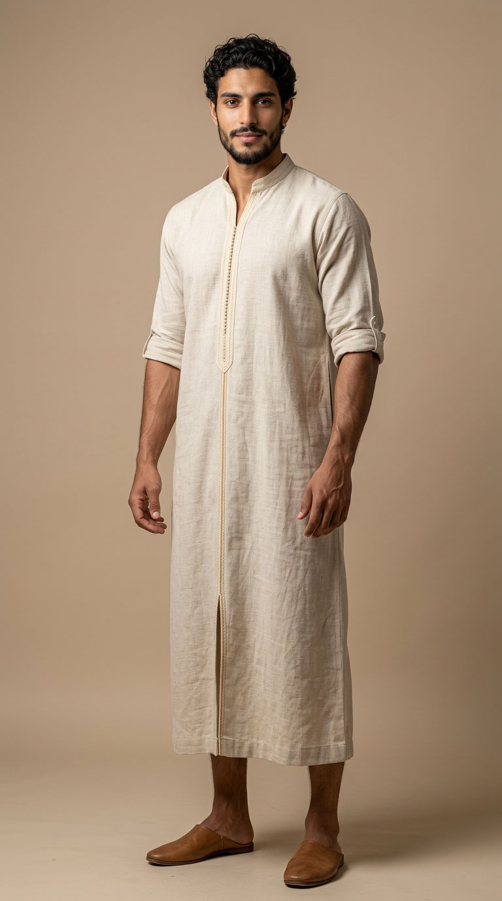
الغندورة
Al-Ghandura — la pièce de base
La gandora du Riad reprend la forme du qamis simple, sans capuche — mais taillée pour épouser un corps entraîné : épaules structurées, port droit, sans jamais tomber dans l'ajusté de coupe occidentale. Le principe : un vêtement qui habille un corps sain, sans jamais le cacher sous l'excès de tissu.
Elle existe en deux longueurs, selon l'usage : la forme longue, jusqu'à mi-mollet, pour la vie commune et les occasions de représentation ; la forme courte, portée sur le serwal visible, pour le travail aux ateliers et les journées courantes — la même pièce, coupée pour deux rythmes de la journée.
L'ouverture frontale est bordée d'un fil de sfifa (سفيفة, sfīfa — le cordonnet brodé traditionnel marocain) dans une couleur unique, identifiable au premier coup d'œil comme la marque du Riad. Manches droites, retroussables au coude pour le travail artisanal. Palette : écru, crème, terre claire — jamais blanc pur, jamais couleur sombre saturée.
Fibre naturelle exclusivement — lin, chanvre, coton épais non lustré l'été ; laine légère l'hiver.
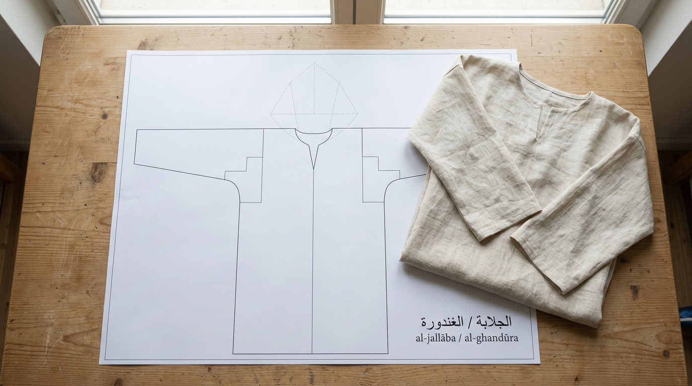

قبعة الحرفة
Qubbaat al-Hirfa — la calotte de métier
Note : forme propre à Dar al-Hiraf, sans nom traditionnel établi — descriptif, non un terme historique attesté.
Une calotte cylindrique rigide en feutre, parois latérales verticales nettes, surface supérieure plate ou légèrement bombée, sans pompon, avec un fin bordage brodé à motif géométrique le long de la base — à mi-chemin entre la taqiyah et le tarbouche, mais plus sobre. Sa couleur indique le métier du porteur.
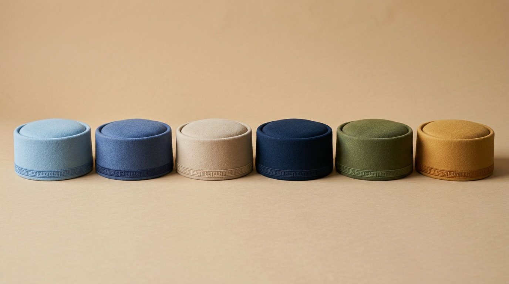
La palette suit désormais exactement les cinq métiers de la main et le métier de l'odeur enseignés à Dar al-Hiraf — une couleur par discipline, sans entrée superflue.
ARTS DE LA CONSTRUCTION
- Khaṭṭ (خط, calligraphie) : indigo clair
- Zellīj (زليج, zellige) : bleu cobalt atténué
- Gebs (جبس, plâtre & mocárabe) : sable clair
ARTS DE LA MATIÈRE
- Nassāja (نساجة, tissage & brocart) : indigo
- Mashrabiya (مشربية, bois & intaille) : vert olive
- ʿIṭr (عطر, parfums & essences) : ambre doré
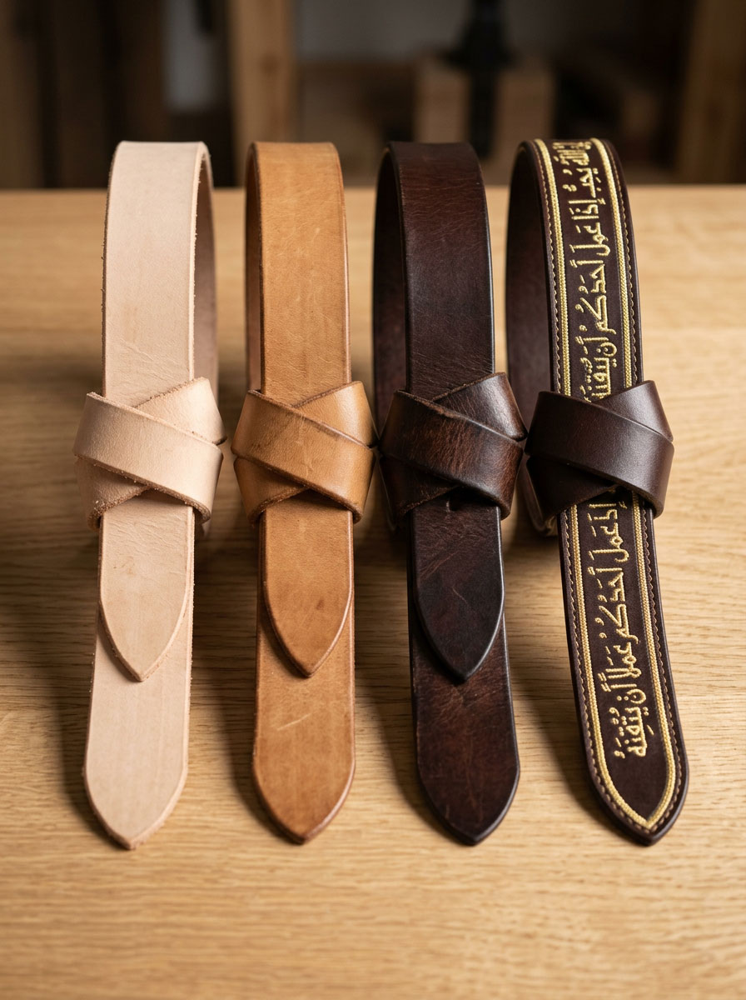
حزام الإتقان
Hizam al-Itqan — la ceinture de grade
Une progression continue de bruns, du cru au très foncé, marque le chemin personnel sans jamais l'exposer comme une hiérarchie visible :
- cru, non teint : entrée, novice
- brun clair : formation avancée
- brun foncé, presque noir : proximité de la maîtrise
- brun foncé, brodé au fil d'or : maître
La ceinture de grade 4 porte, en broderie coufique andalouse, un ḥadīth authentifié : « Allah aime que, lorsque l'un de vous accomplit une œuvre, il l'accomplisse avec excellence. »

الفروة
Al-Farwa — le manteau d'hiver
Lorsque les nuits fraîchissent, un manteau de laine s'ajoute à la tenue de chacun : l'Al-Farwa, une cape ample à capuche structurée, drapée sur les épaules et ouverte sur le devant, sur le modèle du burnous traditionnel — sans manches taillées, les bras restant libres sous l'étoffe.
Usage — porté par tous, du plus jeune apprenti au maître, dans la couleur de sa propre corporation ; à ne pas confondre avec le manteau d'investiture (Al-Khirqa, voir plus bas), qui reste noir et or, unique, remis une seule fois en cérémonie.
Matière — laine feutrée, capuchon et col bordés d'une broderie coufique andalouse en fil d'or, le même langage décoratif que la ceinture de grade 4, mais ici sans lien avec le grade.
TENUE DE BASE — L'APPRENTI
La gandora longue reste la référence pour la vie commune et les occasions de représentation ; la forme courte, portée sur le serwal visible, est réservée au travail aux ateliers et aux journées courantes. Les deux se portent, en hiver, avec l'Al-Farwa.
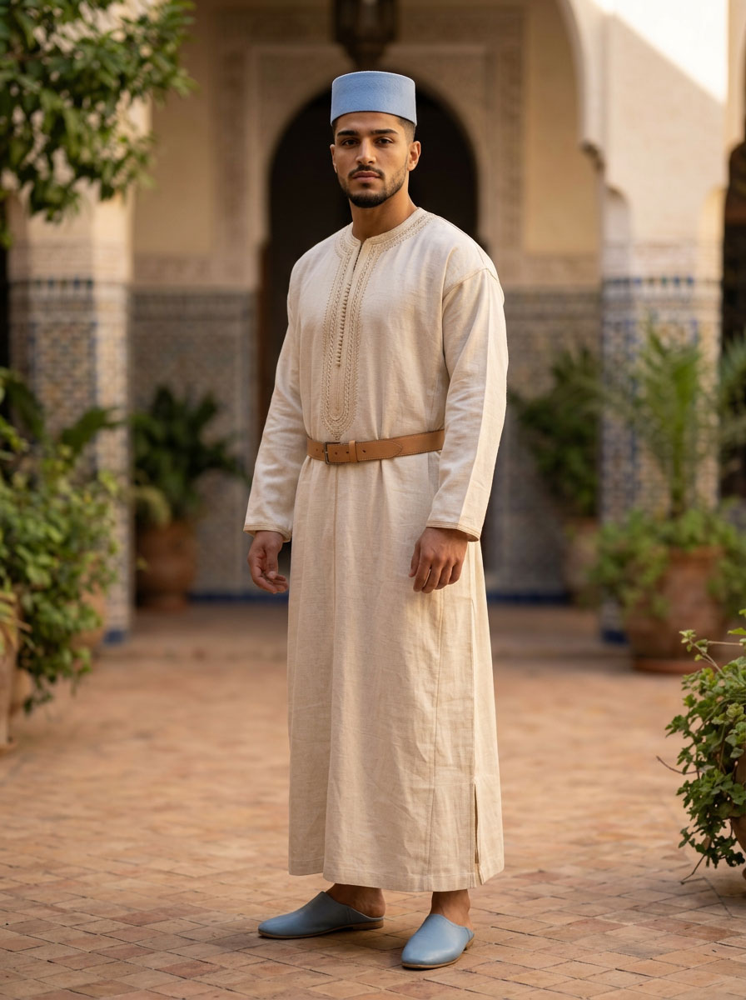
Forme longue, gandora écrue, calotte et babouches dans la couleur du métier, ceinture de grade 1 en cuir cru non teint.
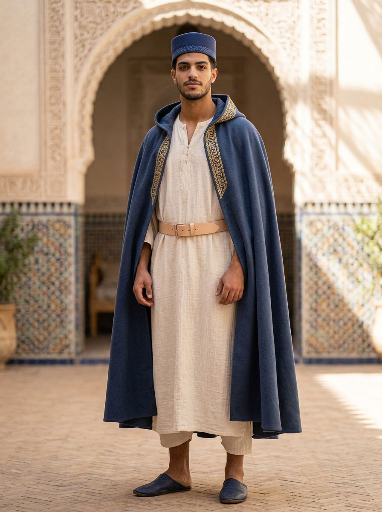
Forme longue, complétée par l'Al-Farwa dans la couleur du métier.

Forme courte, sur le serwal visible, complétée par l'Al-Farwa dans la couleur du métier.
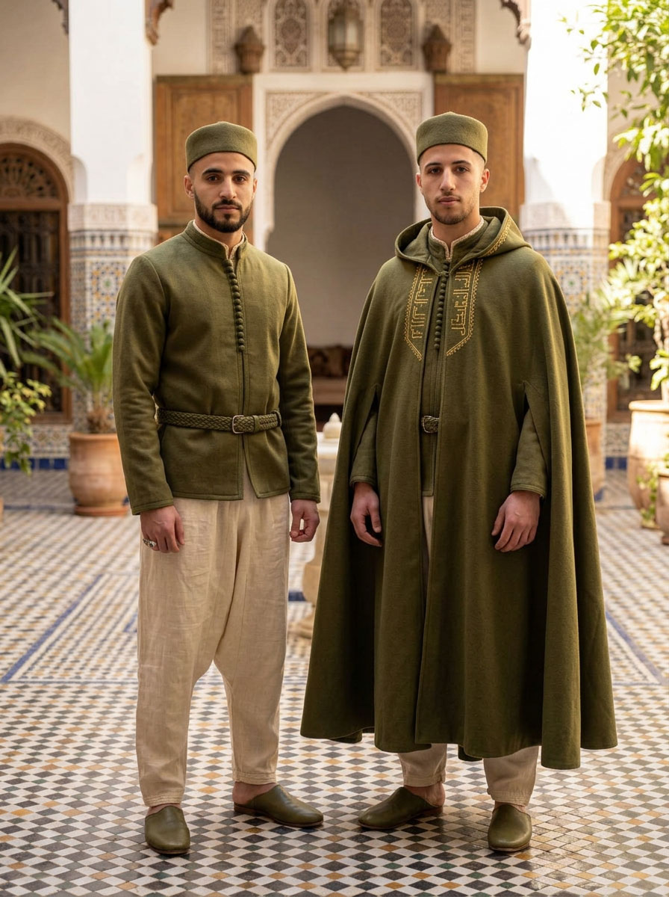
À gauche, la tenue de base ; à droite, la même tenue complétée par l'Al-Farwa.
الجَبادور
Al-Jabador — le vêtement du naib
Entre l'apprenti et le maître, un niveau intermédiaire : un des élèves les plus avancés de chaque corporation exerce la fonction de nāʾib (النائب, « délégué ») — assistant les autres apprentis lorsque le maalem est occupé ou absent, sans jamais se substituer à son autorité sur les questions de formation ou de discipline.
Sa tenue le signale sans ostentation : un jabador — la veste fermée par des boutons ʿaqad (عقد) tressés à la main, dans la tonalité du métier — porté sur un serwal en lin écru, une ceinture mdama tressée dans le même ton que la veste, la calotte de métier habituelle des apprentis, et des babouches (belgha, بلغة) teintes dans la couleur du métier, comme l'ensemble de la corporation. Rien dans cette tenue n'emprunte au registre des maîtres : le nāʾib reste un apprenti parmi les apprentis, distingué par une responsabilité, non par un rang.

الحُلّة
Al-Hulla — la sopraveste du maalem
Le maalem (المعلم, al-muʿallim — le maître artisan) ne porte plus la couleur de son métier en un seul détail, mais dans le vêtement tout entier : une sopraveste longue jusqu'à la cheville, dans la tonalité de son métier, en damas tissé ton sur ton — sans fil métallique, réservé au manteau d'investiture seul. C'est le passage d'une identité visuelle collective à une identité pleinement personnelle.
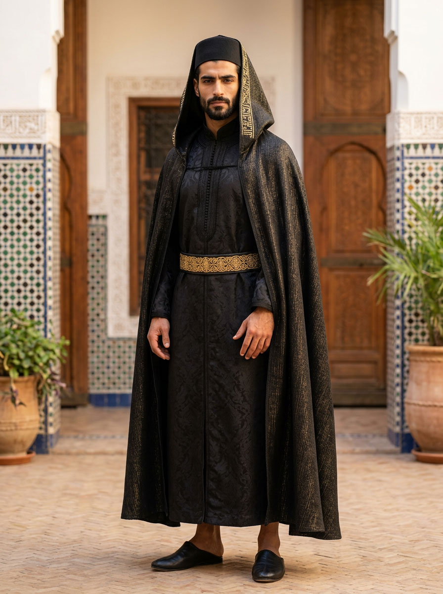
الشيخ
Ash-Shaykh — le responsable de la maison
Au sommet de la maison, l'Ash-Shaykh (الشيخ) ne porte la couleur d'aucun métier : il n'appartient pas à une corporation, il les représente toutes. Sa sopraveste, longue jusqu'à la cheville, est noire — la seule couleur du système entièrement hors de la palette des corporations.
Sa ceinture porte en permanence la broderie coufique andalouse en fil d'or, sans passer par la progression des quatre grades : son autorité n'a pas besoin d'être signalée par une échelle, elle est déjà entière. Lui seul peut porter le noir et l'or en dehors des cérémonies d'investiture — un signe distinctif assumé, non une question de discrétion.
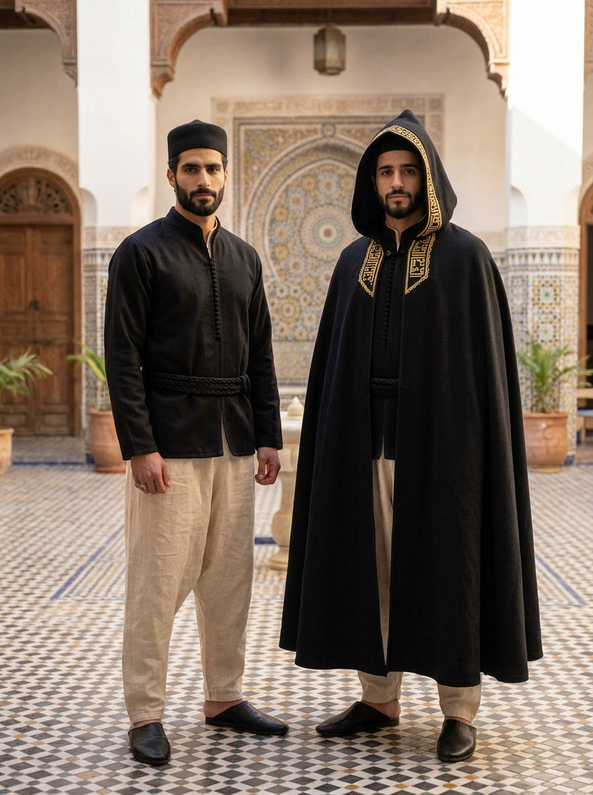
المقدّمون
Al-Muqaddam — les deux conseillers
Deux muqaddam (المقدّمون) assistent l'Ash-Shaykh à demeure — l'un pour la vie intérieure de la maison, l'autre pour les relations extérieures. Leur tenue suit la même logique que celle du nāʾib — jabador à boutons ʿaqad, serwal, ceinture mdama, calotte — mais en noir plutôt que dans la couleur d'un métier : eux non plus n'appartiennent à aucune corporation en particulier.
Résidents aux côtés de l'Ash-Shaykh, dans un espace propre à la direction — voir La résidence.

الشيخ والمقدّمون
Ash-Shaykh et les deux muqaddam — ensemble
Seule différence par rapport à leurs tenues déjà décrites : en hiver, l'Ash-Shaykh et les deux muqaddam portent le même Al-Farwa noir — le seul emploi de cette couleur pour ce vêtement, que le reste de la maison porte dans la couleur de sa corporation.
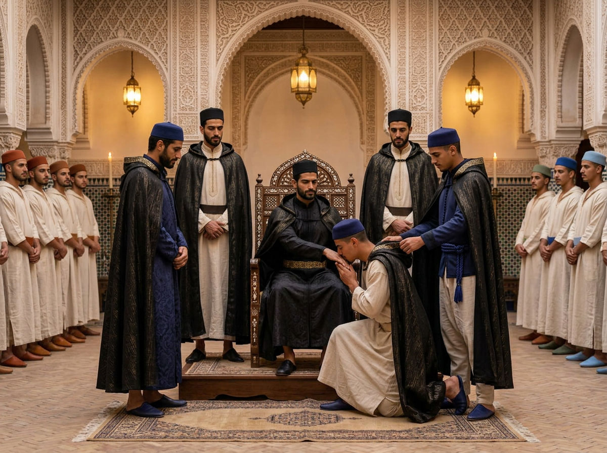
الخرقة
Al-Khirqa — le manteau d'investiture
Pour les grandes occasions — entrée dans le parcours, avancement de grade, investiture de maître — un manteau distinct est remis, non simplement porté : une cérémonie d'investiture, sur le modèle direct de la tradition derviche de la khirqa. Le maître revêt personnellement l'élève, scellant ainsi l'entrée ou l'avancement dans la communauté.
Couleur unique — noir profond — en brocart à fil d'or sqalli, le seul emploi de ce tissu dans tout le système avec la ceinture de l'Ash-Shaykh et le bord de la ceinture de grade 4. Ce noir rehaussé d'or n'est pas choisi au hasard : il fait écho, de loin, à la kiswa qui recouvre la Kaaba — un vocabulaire visuel de gravité et d'honneur largement reconnu dans le monde islamique, sans prétendre à la moindre équivalence avec elle.
Le manteau n'est cousu qu'une seule fois pour chaque résident, lors de sa première investiture. Il reste ensuite l'habit commun de toute cérémonie ultérieure — le même, à l'identique, pour tous les investis, sans distinction de grade ni de corporation. Ce manteau et cette cérémonie prennent tout leur sens à la lumière de l'idéal qui les sous-tend — voir Futuwwa.
الهدية
Le vêtement-cadeau pour hôtes de marque
Pour les visites de dignitaires ou de mécènes, aucun habit n'est proposé à l'hôte pour être porté sur le moment — l'habit d'un dignitaire de cour relève de son propre protocole. Une sopraveste ou un manteau léger est en revanche offert en cadeau de fin de visite, sur le modèle de la pratique historique des corporations artisanales et des cours maghrébines.
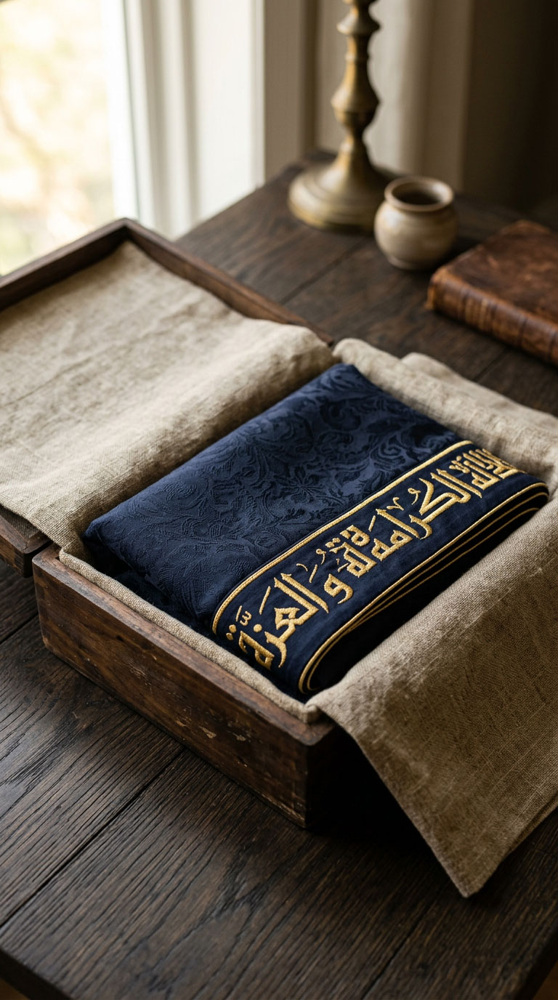
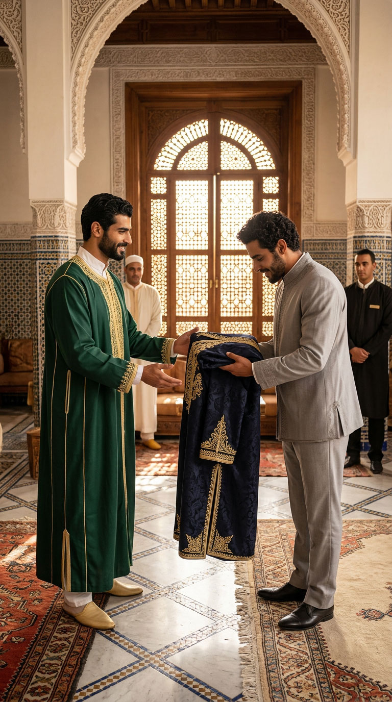
الفروسية والرماية والمصارعة
Le vêtement des activités physiques
Cohérent avec l'idéal historique de la futuwwa, le système prévoit une tenue dédiée pour chaque discipline — un vêtement de mouvement, jamais un déguisement. Ces disciplines et leur place dans l'idéal de la futuwwa sont développées dans Furusiyya ; le zurkhane et sa tenue propre, le tonban, sont traités dans Javanmardi.
السروال
Le sarouel — lutte debout et au sol
Pour la lutte debout (Musara), un sarouel court en lin léger, laissant les jambes entièrement libres. Pour la lutte au sol, un pantalon ajusté en cuir travaillé, inspiré du kispet de la lutte ottomane traditionnelle — la prise devient possible sans jamais déchirer l'étoffe.
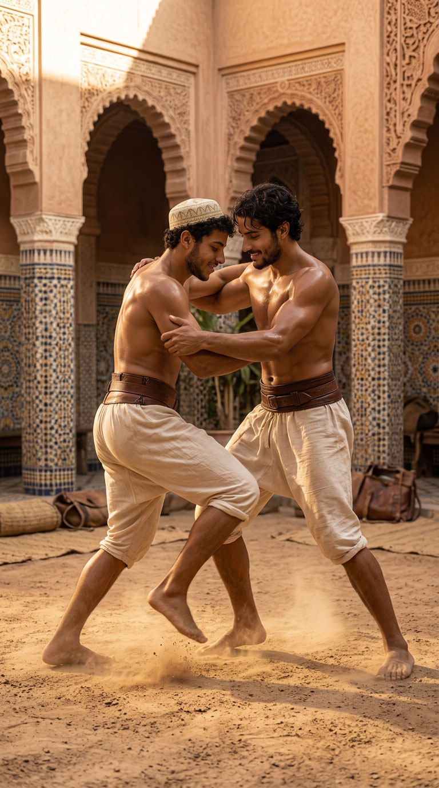
La Musara debout, en sarouel de lin léger.

La Musara au sol
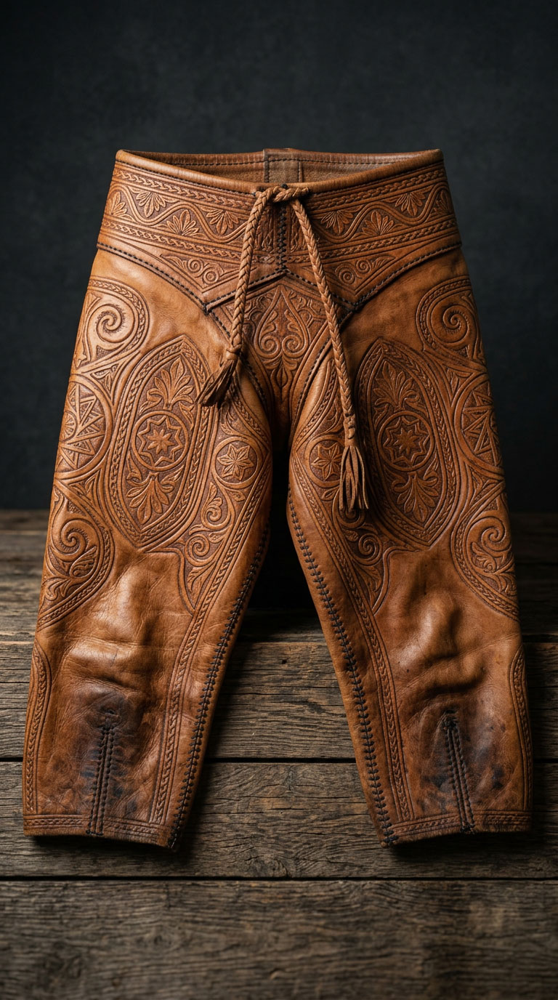
Kispet
الغندورة
La gandora — tir à l'arc
Pour la Rimaya, la gandora de base suffit, à un détail près : l'épaule et l'avant-bras droits dégagés, pour que la corde ne rencontre aucun obstacle au moment du tir.
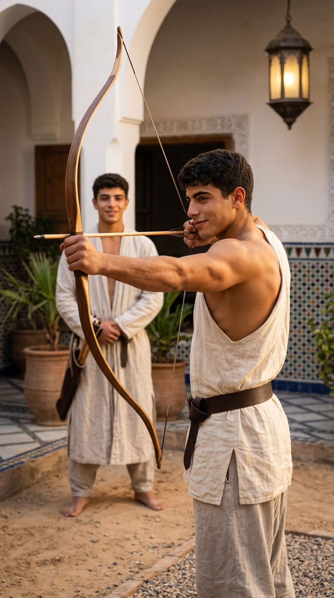
Rimaya — épaule et avant-bras droit dégagés pour la corde.
الغندورة
La gandora — équitation
Pour la Furusiyya, une gandora à fente latérale profonde, pour la liberté de jambe en selle, et un turban resserré plutôt que la calotte habituelle. Deux tenues coexistent : l'une de représentation, l'autre, plus dépouillée, pour le désert.
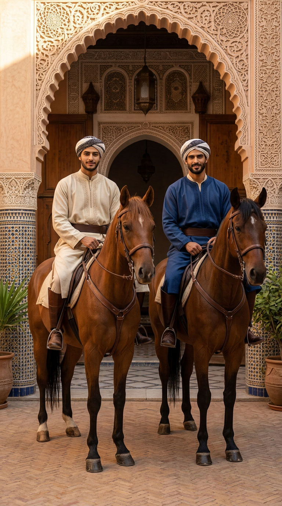
Équitation — Tenue de représentation
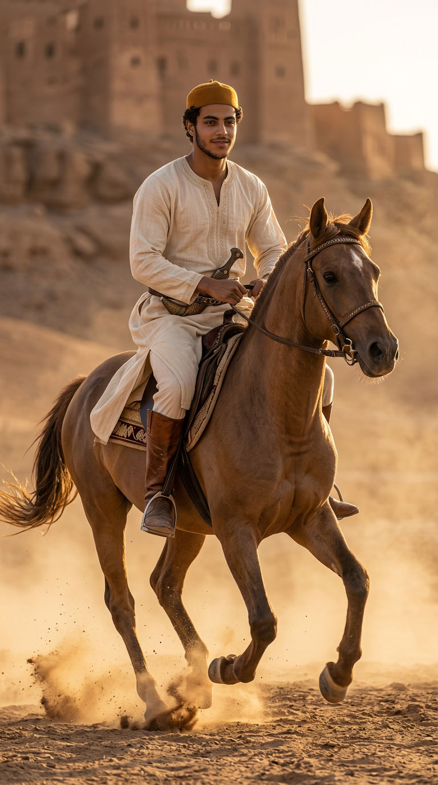
Équitation — Tenue du désert
تحت الثياب
Les sous-vêtements — les pièces privées
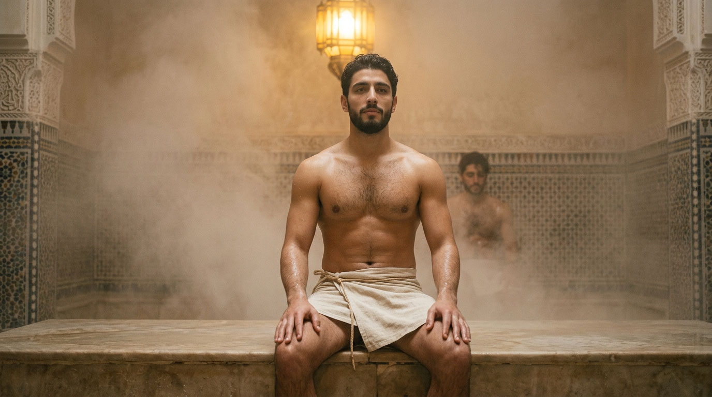
الفوطة
Al-Futa — le tissu du hammam
L'entraînement se referme au hammam, non dans le vestiaire. Un panneau unique de lin léger, noué à la taille, sur le modèle du kötény des bains ottomans — la fūṭa (فوطة), le tissu traditionnel du hammam.

القميص
Le qamis
Qamis de lin écru, sans broderie ni couleur identificative : la première couche, portée sous la gandora — pièce privée, hors du système de signes publics.
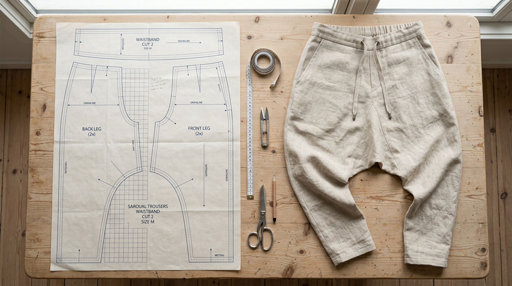
السروال
Le serwal
Pantalon large en lin écru, coupe basse traditionnelle : la couche portée sous toute tenue, gandora comme habits de discipline.
ثوب الصلاة
L'habit de prière
Le Coran prescrit, en des termes simples, la dignité vestimentaire de la prière : « Ô fils d'Adam, parez-vous de vos plus beaux atours à chaque prosternation » (sourate al-Aʿrāf, 7:31) — la zīna (زينة), l'ornement, entendue ici comme propreté et décence, non comme parure. Le Prophète ﷺ y ajouta une précision concrète : que nul ne prie dans un habit unique sans rien qui couvre les épaules (rapporté par al-Bukhari et Muslim).
Le qamis blanc ou cru clair de Dar al-Hiraf répond à ces deux exigences : couvrir l'ʿawra dans son intégralité, des épaules aux chevilles, dans un tissu propre, sans broderie ni ceinture. Dans la prière, l'égalité entre les élèves prévaut sur tout signe de grade ou de métier.